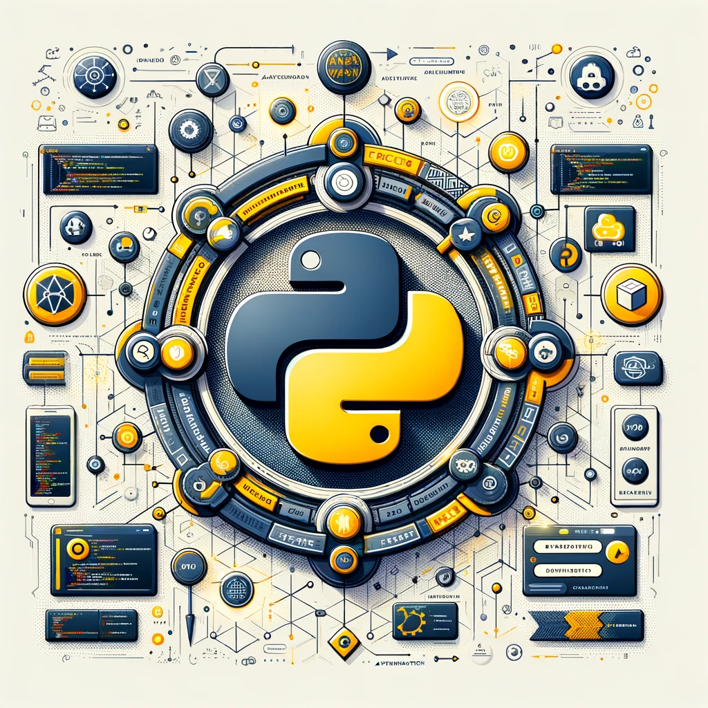

Introduction à Python
Back to Main Website
Home
Introduction aux API
API - Définition
Utiliser une API
Créer une API
Sécuriser une API
Tester une API
La notion d’API utilisateur
Travaux Pratiques
TP - Postman et requêtes API
Consommation avancée d’API
Protocols de communication
Authentification et sécurité des API
Optimisation des ressources et de la performance des API
Travaux Pratiques
TP : Comparaison des performances des appels en tant qu’utilisateur
Communication entre Processus (IPC)
Introduction à l’IPC
Sockets
Fichiers et IPC
Shared Memory
Pipes
gRPC
Conclusions
Travaux Pratiques
Conception d’APIs
Introduction à la Conception d’APIs
Les principaux Frameworks d’APIs en Python
Fast API
Django REST Framework
Tester et documenter une API
Bonne pratique générale
Conclusion
Travaux Pratiques
TP 4 : API d’Indicateurs Financiers avec Gestion des Niveaux d’Accès
Déploiement d’API - Principes Généraux et Mise en Pratique avec Heroku
Introduction au Déploiement d’API
Heroku - Présentation du service
Meilleurs Pratiques avant un déploiement
Deploiement sur Heroku
Déploiement avancé
Bonus - Nom de Domaine
Conclusion
Sujets de Projets possibles
Code source
Conception d’APIs
Remi Genet
2024-01-05
Les cours de cette partie sont:
Bonne pratique générale
from flask import Flask, jsonify, make_response
Remi Genet
2024-01-05
Conclusion
``` Le choix du framework dépend fortement des besoins spécifiques de votre projet, de votre expérience en programmation et de la communauté de développement autour de vous.…
Remi Genet
2024-01-05

Django REST Framework
pip install django
Remi Genet
2024-01-05
Fast API
from fastapi import FastAPI from pydantic import BaseModel
Remi Genet
2024-01-05
Flask
III
Remi Genet
2024-01-05
Introduction à la Conception d’APIs
Une API (Application Programming Interface) est un ensemble de règles et de définitions qui permettent à des logiciels ou des composants logiciels de communiquer entre eux.…
Remi Genet
2024-01-05
Les principaux Frameworks d’APIs en Python
Remi Genet
2024-01-05
TP 4 : API d’Indicateurs Financiers avec Gestion des Niveaux d’Accès
Asynchronie vs synchronie
Remi Genet
2024-01-05
Tester et documenter une API
import unittest import my_flask_app
Remi Genet
2024-01-05
No matching items
Back to top